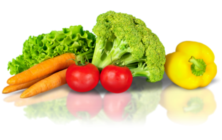
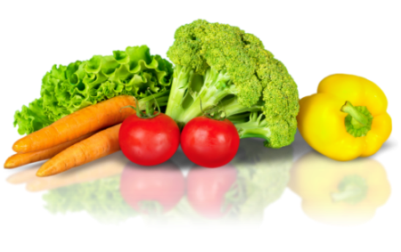

Sead
Senin Absen Daging
Kurangi daging, selamatkan bumi, mulai dari Senin. Ciptakan kebiasaan yang berdampak besar untuk lingkungan dan tubuhmu.
Kurangi daging, selamatkan bumi, mulai dari Senin. Ciptakan kebiasaan yang berdampak besar untuk lingkungan dan tubuhmu.
Sead (Senin Absen Daging) adalah gerakan yang mengajak masyarakat untuk tidak mengonsumsi daging setiap hari Senin sebagai langkah sederhana menuju hidup yang lebih sehat dan lingkungan yang lebih lestari. Konsumsi daging berlebih berkontribusi pada emisi gas rumah kaca, pemborosan air bersih, serta kerusakan lingkungan. Sead hadir sebagai solusi kecil yang bisa dilakukan semua orang, mulai dari anak muda, orang tua, keluarga, hingga komunitas.
Dengan tidak makan daging satu hari dalam seminggu, kita bisa mengurangi dampak negatif terhadap bumi tanpa harus mengubah gaya hidup secara drastis. Gerakan ini mengajak kita untuk lebih sadar terhadap apa yang kita konsumsi dan bagaimana hal itu memengaruhi masa depan. Satu hari, satu langkah, satu perubahan — mulai dari Senin.
Manfaat Lingkungan
Manfaat Kesehatan
Manfaat Sosial dan Ekonomi
Manfaat Pendidikan

Perubahan gaya hidup akan terasa lebih ringan dan menyenangkan jika dilakukan bersama orang-orang terdekat. Melalui Paket Senin Tanpa Daging untuk Sahabat dan Keluarga, kamu akan mendapatkan panduan lengkap, inspirasi resep, serta materi edukatif yang mudah dipahami—semuanya dirancang untuk membantu kamu dan lingkaran sosialmu memulai langkah sederhana menuju pola makan berbasis nabati.

Festival tahunan yang mempertemukan para chef, produsen makanan, dan pencinta kuliner nabati untuk menghadirkan inovasi terbaru dalam dunia masakan berbasis tumbuhan.
Baca selengkapnya
Penelitian terbaru menunjukkan dampak positif diet nabati terhadap kesehatan jantung dan pencernaan.
Baca selengkapnya
Gerakan Senin Tanpa Daging kini telah hadir di 10 kota besar Indonesia dengan ribuan peserta aktif.
Baca selengkapnya
Studi menunjukkan penurunan signifikan emisi karbon dari program Senin Tanpa Daging selama setahun terakhir.
Baca selengkapnya“Awalnya saya kira sulit. Tapi ternyata menyenangkan dan menyehatkan! Sekarang tiap Senin jadi hari makan sayur favorit saya.”
“Tidak makan daging sehari bisa menghemat air dan energi, dan ternyata menyenangkan juga bisa makan sayur tiap Senin, jadi lebih sehat deh.”
“Gerakan Sead dapat mengurangi emisi gas rumah kaca dari peternakan. Langkah kecil seperti ini bisa berdampak besar untuk bumi.”